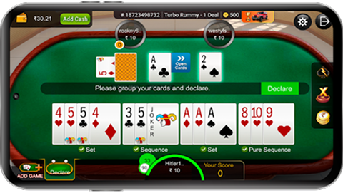

They begin as small, unnoticed signals. Hidden dependencies, silent blockers, and misaligned decisions go undetected until delays are already in motion. Before teams are built. Before work begins.

Real product · Gameplay UX · High-stakes environment
I was the sole UX designer working on the gameplay experience for a real-money platform used by millions.
With real money involved, even small moments of confusion could affect user trust. I focused on making gameplay decisions clearer and helping users feel in control while playing.

Tracto is a UX research and design project focused on improving digital healthcare experiences for elderly users. The key insight from research was that the challenge is not a lack of features, but the assumption of digital confidence, which often creates dependency and frustration. This project rethinks healthcare interactions by simplifying workflows, reducing cognitive load, and introducing guidance-driven experiences that help elderly users manage their daily health activities with greater confidence and independence.
To deep drive my ux research, you can Download all research files.


This research explores how mid-roll ad placement and duration impact user attention and engagement. The key insight was that users do not inherently dislike ads, but react negatively when ads interrupt moments of high engagement or feel disproportionate in length. By analyzing behavioral patterns across different age groups, the study highlights how timing, context, and perceived control influence user tolerance and trust. The findings suggest that more thoughtful ad strategies can reduce frustration while maintaining effectiveness
To deep drive my ux research, you can Download all research files.
Solving complex product problems through human insight.
Grounded in rigorous UX research and system-level design thinking.
Exploring UX for intelligent systems.
Driven by research-backed UX systems and decision frameworks.

Complex systems rarely break because of technology. They break when human behaviour is misunderstood.
Most project tools track tasks and deadlines, but real project problems begin with subtle human signals. This research explores an AI concept that observes collaboration patterns and behavioural signals to help project managers detect risks earlier.
Explores how generative AI is transforming the design workflow and why prompt writing is emerging as a critical skill for modern designers. The article discusses how structured, thoughtful prompts help guide AI systems to produce more meaningful and reliable creative outputs.


I am a UX & AI Experience Strategist focused on simplifying complex systems and improving how people interact with them. My work spans healthcare, gaming, and enterprise platforms, where clarity, structure, and decision-making are critical. Over the years, I’ve questioned assumptions, redesigned systems, simplified chaos, and helped teams think more clearly. I’ve made mistakes, learned fast, and shipped products that mattered. I believe good UX is not decoration. It is decision-making. It is responsibility. It is impact.

 +91 9959 629 041
+91 9959 629 041  View Work ↓
View Work ↓